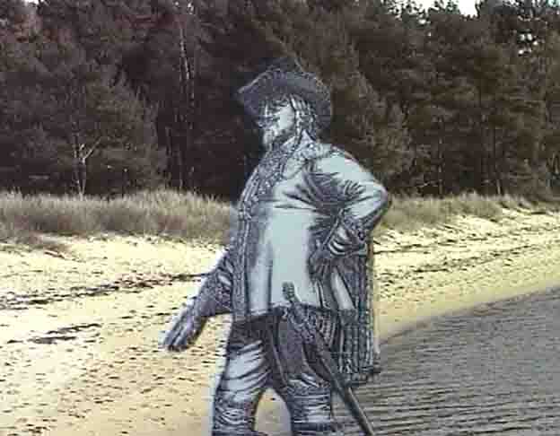
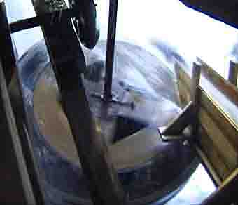
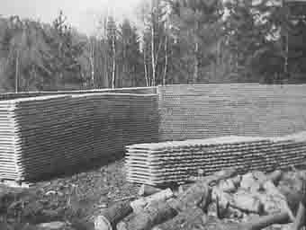

Skog og Tømmer i Kristiansand
Bildeserie i lav oppløsning, hentet fra tidligere videofilm-opptak, gjort av Torvald Slettebø.
"Her skal byen ligge", skal Christian IV ha sagt i det han steg i land på Sanden i året 1641. I virkeligheten gikk det nok ikke så spontant for seg. Kongens embedsmenn hadde lenge tilrådd kongen opprette en flåtebase på sørkysten.

Og her lå den mest velegnede havnen, med trygg og ubegrenset plass for orlogsfartøy og handelsskip. Og adkomst og utseiling gjennom Østergap eller Vestergap, alt etter vindretning.
Og så gav tømmeret økonomisk grunnlag for bydannelse: To store tømmerelver munnet ut her, Topdalselva og Otra. En garnisonsby måtte ha lokale inntekter, og tømmerhogst, sagbruk og trelasthandel gav det. Og den nye byens beliggenhet gjorde tollkontrollen effektiv, så Kongen også fikk sitt.
Eik i grove dimensjoner trengtes i store mengder til oppbygging kongens orlogsflåte, og Sørlandet hadde eikeskoger som måtte utnyttes.

Utsnitt av et kart fra 1662, da byen på Sanden var 21 år gammel, og nettopp "myndig". Vi ser elvemunningen, med skip i vinteropplag. Og tømmer eller trelast som fraktes i flåter. Det var flere små og større sagbruk lenger opp i elva. Odderøya hadde viktig utskipningshavn for tømmer og trelast.
Tømmersaga, for to mann, ser rusten og gammel ut. Og den er forlengst avløst av motorsaga. Men egentlig er den selv en nykomling: Tømmer ble nemlig hogd med øks i gammel tid.
Barkespade: Barken måtte skrelles av mens stokken var fersk. Ble barken sittende på, kunne veden ta skade under lagring.
Tømmeret kunne fløtes på elva. Men frem til elva måtte det trekkes av hesten. Og den måtte stelles skikkelig. Hoven vokser stadig, så hesteskoen kan løsne, om det ikke skos om.
Gode arbeidskamerater. Men nå avløses hesten av traktoren, og da blir forholdet mer upersonlig.
Men i ulendt sørlandsskog kan ennå hesten være best.
Og i tidligere tider var den altså uten konkurranse.
Også til vedkjøring.
Det var stritt arbeid både for hest og mann
- enten det var slapseføre eller djupsnø.
Fra en gammel tegning: Pelskledd oppkjøper noterer, eiermerke hogges inn, og oppmåleren gir beskjed om dimensjon på stokken.


Fløting var hard påkjenning både for folk og tømmer. Sørlandselvene hadde stryk og fosser som måtte forseres. Vanskeligst var Topdalselva, og mye tømmer ble skadet under reisen. Etter hvert ble det bygd tømmerrenner forbi de vanskeligste partiene.
Så ble tømmeret samlet opp i lenser.
Et vinterbilde fra Stray-bommen. Her ble tømmeret sortert etter de innhogde eiermerkene.
Stokkene ble møysommelig hogd firkantede. Det ble mye flis av det. Men den gikk ikke til spille. Den ble samlet opp til brensel. Plankehoggerne var en stor befolkninggruppe i det gamle Kristiansand.

Tidlig kom skipsverftene i byens strandsone. På dette utsnittet fra en håndkolorert tegning ser vi rundtømmer, og ferdighogde planker og krumme spanter og kne.

Det var et umenneskelig slit å sage med muskelkraft. Men så kom oppgangssaga, som fossen kunne drive.
Modellen viser virkemåten: Vannhjulaksen har en sveiv som trekker sagbladet opp og ned. Ofte var det i tillegg et mindre vannhjul som trakk stokken mot sagbladet.
De eldste sagbladene ble gjerne smidd av bygdesmeden. De var tjukke, så det blei mye spon. Nyere sagblad var mer effektive.
vannhjul av vanlig type, helt av tre. Senere ble det brukt støpejern, i hvert fall til akselen.
I bildet til venstre ser vi nederst kjettingen som trekker stokken.

Oppgangssag av moderne type, med mange og tynne blad, som i en operasjon kan kløyve stokken til bord.

Denne oppgangssaga sto i Boen parkettfabrikk ved Lillesand, og gikk dessverre med i brannen.
Kornbrekke sag er restaurert av historielaget. Opprinnelig var det en oppgangssag, som ble ombygd til sirkelsag. Vi ser ned på turbinen, en trekonstruksjon med jern-skovler.
Via remmer og hjul driver fossen sagbladet. Et gammelt anlegg, men fullt brukbart også i dag.
Men så tar motoren over, og mannen trekker bare i spaker. Det er fremdeles også små sagbruk på Sørlandet, men det går i retning av færre og større.
Kontroll av sagbladet.
Stavproduksjon var lenge en viktig næring i de indre Agder-bygdene. Den kunne utnytte småskogen bedre, og behøvde ikke et stort teknisk anlegg.
Staven ble brukt til tønner, og til kassebord. Men så ble det ikke lenger bruk for tønner til sidesaltting, og plastemballasje avløste trekassen.
Små gårdsbruk med litt skog kunne greie seg slik. Jordbruk i sommerhalvåret, og skogsdrift og stsavprodukjons resten av året. Kanskje også vedhogst.
Stav ligger til tørk før salg.
Og så videre med båt. Denne staven skal til tønnefabrikker vestpå.
Bøkkeryrket krevde lang opplæring og erfaring. Høvling og tilpassing ble gjort for hånd. Men så var det altså ikke lenger behov for stavproduksjon. Tidene skifter: Nå må småskogen mest bli til brensel. Som jo er verdifull nok, særlig når elektrisk oppvarming stiger i pris.